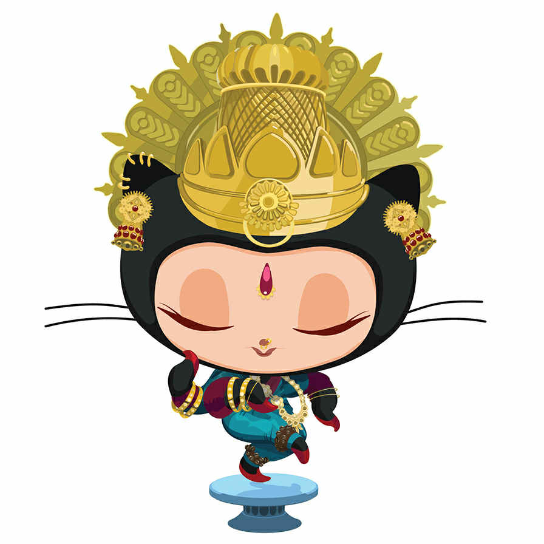

All About GitHub
- Q. What is a version control system?
A. A Version Control System (VCS) is a tool used in software development and collaborative projects to track and manage changes to source code.
- Q. What is Git?
A. Git is a tool used to keep track of changes to files, especially the code in projects.
It is termed a distributed version control system because of its behavior to allow multiple people to work on the same project, even if they are not connected to a common server.
- Q. What is GitHub?
A. GitHub is a web-based platform that hosts Git repositories, providing developers with tools to create, store, manage, collaborate, and share their code.
It leverages Git, an open-source version control system created by Linus Torvalds, to facilitate distributed version control, access control, bug tracking, software feature requests, task management, continuous integration, and wikis for every project.
- Q. What is the difference between Git and GitHub?
A. The difference between Git and GitHub is that Git is software designed to track changes in source code.
It operates locally on the system, it is a command-line tool and does not require an internet connection. Also, Git is maintained by Linux and is focused on version control and code sharing.
GitHub, on the other hand, is a cloud-based platform that is a hosting service for Git repositories, which features a graphical user interface; requires an internet connection and is maintained by Microsoft.
- Q. Who started GitHub and how was it started?
A. GitHub was started by Tom Preston-Werner, Chris Wanstrath, P. J. Hyett, and Scott Chacon. GitHub started from the need for a more collaborative and user-friendly platform built on top of Git, the distributed version control system created by Linus Torvalds.
- Q. What company owns it now?
A. GitHub is now owned by Microsoft.
- Q. How much does a GitHub account cost?
A. A GitHub account is free for individuals and organizations, the team plan costs $4 per user/month and includes advanced collaboration features.
The enterprise plan costs $21 per user/month that includes security, compliance, and flexible deployment.
- Q. What is the Octocat?
A. Octocat is GitHub's official mascot, a playful and iconic figure that has become synonymous with the platform. It represents developers and symbolizes innovation, collaboration,
and the spirit of the tech industry.
Git/GitHub terms:
- repository: This is a central location where developers store, manage, and collaborate on their code and related files.
- commit: It represents a saved snapshot of changes to a repository. It's a fundamental unit of version control, acting as a historical record of modifications made to a project's files.
- fork: It gives people the ability to create a personal copy of someone else's project under your GitHub account.
Forking a repository allows you to freely experiment with changes without affecting the original project.
- push: A command that allows us to transfer files from the local repository to the remote repository. This process essentially uploads your local work to a centralized location, such as a repository hosted on GitHub.
- pull requests: A pull request (PR) is a mechanism in GitHub feature that allows developers to propose changes from one branch to another, enabling collaboration, code review, and discussion before merging changes into the main branch.
- workflows: It is a configurable automated process that will run one or more jobs. Workflows are defined by a YAML file checked in to your repository and will run when triggered by an event in your repository,
or they can be triggered manually, or at a defined schedule.
- issues: A feature provided by GitHub to help developers and teams track tasks, bugs, feature requests, or any work related to a project.
It serves as a centralized system for managing and organizing project-related discussions and progress.
- raw button: When viewing a specific file within a repository, it provides access to the unprocessed, unstyled content of that file.
- blame button: This command helps developers identify who made specific changes to a file. It annotates each line in a file with information about the last commit that modified the line, including the commit hash,
the author, the date of the change, and optionally, the line number.
A image of Octocat
